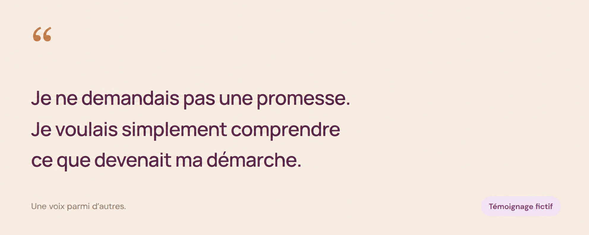

DROITS DES FEMMES · RESPONSABILITÉ · JUSTICE
Le silence ne doit pas être la suite de votre histoire. Comprendre vos droits, trouver du soutien et redonner une suite à votre démarche.
À votre rythme. Sans jugement. Sans promesse impossible.

Des droits mieux compris
Un accompagnement humain
Un suivi plus transparent
DERRIÈRE CHAQUE DOSSIER,UNE PERSONNE
Le plus difficile ne devrait pas être de connaître la suite.
Déposer plainte est une démarche importante. Ne pas savoir ce qu’elle devient ne devrait pas être une fatalité.
Le courage de parler
Une femme dépose plainte et espère que sa démarche sera entendue.
Le temps de l’attente
Les jours passent. Les informations deviennent difficiles à obtenir.
Le poids du silence
Qui suit le dossier ? Pourquoi ce délai ? Vers qui se tourner ?
Une suite à construire
Comprendre, être orientée et identifier une prochaine étape concrète.
À votre rythme. Sans jugement. Sans promesse impossible.
LE FIL QUI BOUS RELIE
#MTSKTICH signifie « Ne reste pas silencieuse » en darija. Notre conviction : chaque démarche mérite un interlocuteur identifié, des étapes claires et une trace.
À votre rythme. Sans jugement. Sans promesse impossible.
Comprendre ses droits
Des repères accessibles pour mettre des mots et mieux s’orienter.
Ne plus avancer seule
Comprendre le rôle des associations et des professionnels.
Rendre le suivi visible
Qui fait quoi, à quelle date et pour quelle prochaine étape ?
LE MUR DES VOIX
Parce qu’être entendue commence aussi par se sentir moins seule. Un espace de récits et de solidarité, sans jugement.
